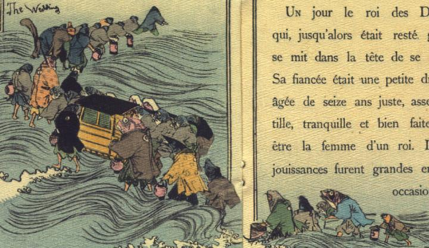

行列する魚の化物たち。30体余りの魚たちが駕籠を中央に列をなして渦巻く波の中を歩いている。魚は銘々に羽織、袴をまとっている。袴の裾から見える脚は人間のものである。彼らの多くは赤い提灯を手にしている。駕籠のすぐ前を歩く赤い魚は飾り槍のようなものを担いでいる。
著作者：J.Dautremer／出典：親書誌：U426_nichibunken_0107：La meduse simple et naïve／日付：2006／資源識別子：U426_nichibunken_0107_0002_0000
Copyright (c)2010- International Research Center for Japanese Studies, Kyoto, Japan. All rights reserved.